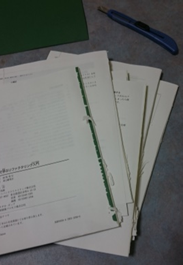
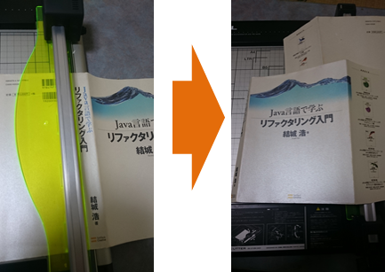
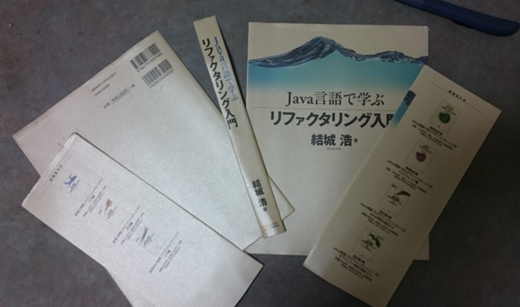

2. 本の解体¶
B5サイズの本を例に解体していきます。 本格的にJavaの開発を始めたときに、非常にお世話になった本です。

図 - 2.1 解体前の本
2.1. 準備¶
解体の前の準備として、次の内容を確認します。
- 付箋が貼ってあれば、はがします。
- しおりや、申し込みはがきなどが挟まれていれば取り出します。
- ドッグイヤー（ページの角を折る）があれば、戻します。

図 - 2.1.1 ドッグイヤーを戻す
2.2. 見返しの剥離¶
見返し（中身と表紙をつなぐ紙）を取り外します。
- 見返しの糊付け部分が取れるまで引っ張ります。

図 - 2.2.1 見返しの剥離
- 反対側の見返しも同様に引っ張ります。

図 - 2.2.2 反対側の見返しの剥離
- 両方の見返し部分を引っ張り、完全に剥離します。 半分まで剥離できたら、反対側に持ち替えて引っ張ると、綺麗にできます。
図 - 2.2.3 見返しの完全な分離
2.3. 本体の分割¶
50～80ページ（25～40枚）ずつに分割します。 このページ数は裁断機の能力に依存するため、使用する機器により変動します。 また、使用されている紙の厚さにもよるため、本により調節する必要があります。
「概要 」で紹介した裁断機の場合は、上限が40枚（80ページ）ですが、 紙の厚さにもよるため、30枚（60ページ）を目安にすれば多くの本に対応できます。
- 分割する部分のページを押さえつけて、しっかり開きます。
図 - 2.3.1 分割箇所でページをしっかり開く
- カッターナイフで糊付け部分が剥離できるまで切っていきます。 古い本の場合、糊が劣化しているため、手で押さえたり、引っ張るだけで糊付け部分が剥離できます。

図 - 2.3.2 糊付け部分の剥離
- カッターナイフの刃を立てて、切れ目を入れていき分割します。
図 - 2.3.3 本体の分割
- これを繰り返していきます。

図 - 2.3.4 本体の分割
2.4. 本体の裁断¶
糊付け部分を境に裁断機で裁断します。 糊付け部分が残ると、ドキュメントスキャナで読み取るときに、重送・紙詰まりのもととなるため、余裕を持って 1cm で切り取ります。
- 裁断機に本体を設定します。ガイドラインに沿って、その際に1cm程度ずらします。 ページの枚数が多いとセットできないため、そのときは、さらに分割します。
図 - 2.4.1 裁断機のセット
- スライダーを前後に3～4回スライドさせて、裁断します。

図 - 2.4.2 裁断
2.5. 表紙の分割¶
単行本（A5）サイズの場合は、ScanSnapでそのまま取り込めるため、表紙の分割は必要ありません。
- B5サイズ以上の本の場合、ScanSnapでそのままでは取り込めないため分割します。

図 - 2.5.1 表紙の分割
- ScanSnapで取り込めるようにさらに分割します。

図 - 2.5.2 表紙のさらなる分割
注釈
表紙をScanSnapで取り込めるサイズに分割が面倒な場合があります。 綺麗さにあまりこだわらなければ、フラットベースの通常のスキャナで取り込めサイズの2分割でよいです。